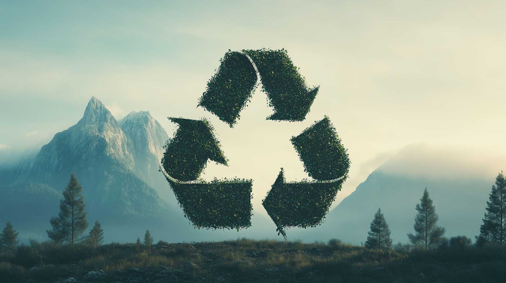

Model actual (lineal)
La Panaderia Lluc Xaro segueix un model tradicional basat en:
- Produir
- Consumir
- Descartar
Aquest model provoca:
- Sobreproducció
- Malbaratament alimentari
- Manca de previsió
- Gestió poc eficient de les comandes

Propostes de millora
La digitalització permet transformar el model lineal en un model circular més eficient:
- Reduir la sobreproducció gràcies a les comandes anticipades.
- Disminuir el malbaratament alimentari.
- Crear promocions per vendre productes sobrants.
- Millorar l'eficiència del negoci.
Funcions principals de l'aplicació
- Registre i inici de sessió de clients.
- Fer comandes online a qualsevol hora.
- Reserva anticipada de productes.
- Disponibilitat en temps real.
- Notificacions automàtiques.
- Historial de comandes.
- Sistema de recompenses digitals.
Relació amb la sostenibilitat
La digitalització ajuda a fomentar un model més sostenible perquè:
- Les comandes anticipades redueixen la sobreproducció.
- Es disminueixen residus i excedents.
- Es poden crear packs anti-malbaratament.
- Es poden premiar comportaments sostenibles.
Comportaments sostenibles premiats
- Portar una bossa reutilitzable.
- Reservar amb antelació.
- Comprar packs de productes sobrants.